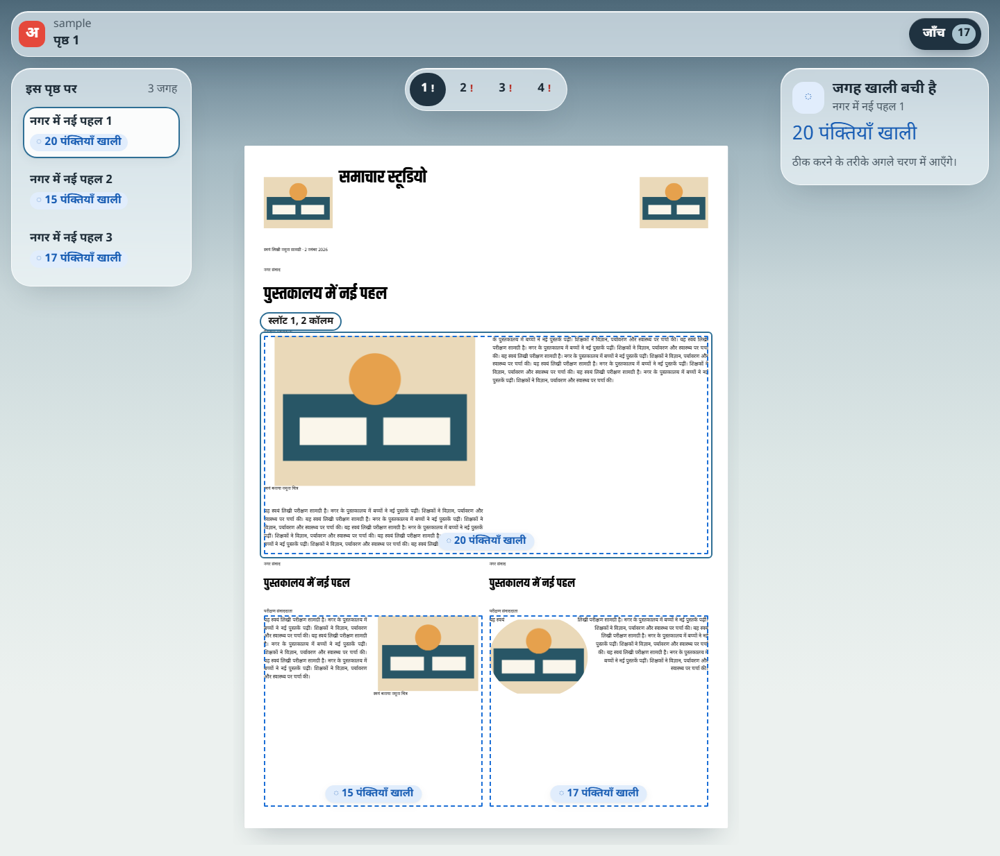

T3: fit marks, page strip, selection and the "जाँच (N)" button (editor slice 3 of 4)
The editor now shows every slot's state in words, with an icon as well as colour: "N पंक्तियाँ ज़्यादा" (red), "N पंक्तियाँ खाली" (blue dashed), "खाली जगह" (hatched). There are no percentages. The single primary button "जाँच (N)" walks the problem queue across pages; the N key does the same. Each page in the strip shows its number with ! or ✓, and its words are in the label and tooltip. Clicking a slot, on the page or in the left list, selects it; the right panel says what is wrong, and the selection is announced to screen readers. Wording and queue logic live in the new tested package packages/ui.

Checks
| Check | Result |
|---|---|
| UI state unit test (packages/ui) | 7 passed: Hindi words with counts and singular forms; titles; unknown state throws; queue order across pages, wrap, start; page status has icon and words |
node scripts/smoke-studio.mjs | SMOKE PASS: 40 lines, 0 wider than box, 0 console errors; 1 primary button; 3 marks; 0 percentage texts; axe serious/critical 0; check queue selected and announced "पृष्ठ 1, नगर में नई पहल 1: 20 पंक्तियाँ खाली" |
Not yet: undo and redo (T4); fix options (next slice); help button and save status (G20); npm run ux on this route needs harness/ux/routes.json to list it, which is Amal's change.